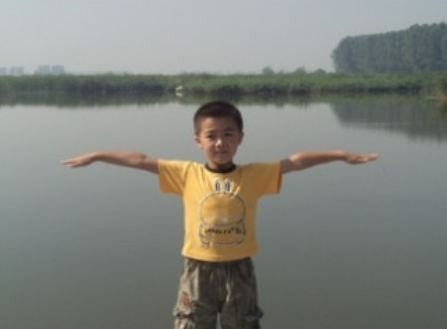

He is a cute boy.

今天上午带着孩子，一家四口去我们附近的海子湖浏览了一番，家乡的风景也不错，照了几张跟大家分享一下
［ 死劲哭 于 2011-7-9 17:01:26 时花20金币送鲜花一朵］
［ 隐藏菜系 于 2011-7-9 17:15:32 时花20金币送鲜花一朵］
附上儿子的几张照片
小家伙够淘气吧 瞧 ，开心的样子
展开双臂想展翅高飞呢 沉思中
［ 隐藏菜系 于 2011-7-9 17:21:57 时花20金币送鲜花一朵］
［此帖子已被 蓝天蓝 在 2011-7-9 17:25:10 编辑过］
［ 以和为贵 于 2011-7-9 18:23:02 时花20金币送鲜花一朵］
姐姐，海子湖不远处是不是还有个‘庙湖’呀？
对了对了，连接两湖的应当还有座桥吧，好象叫‘和尚桥’的。记不大清楚了，很多年前去过一次
引用：不是的，这个海子湖是今年刚刚才建的，现在还在建设之中呢，估计要明年才能建好
原文由 死劲哭 发表于 2011-7-9 17:16:25 :姐姐，海子湖不远处是不是还有个‘庙湖’呀？
对了对了，连接两湖的应当还有座桥吧，好象叫‘和尚桥’的。记不大清楚了，很多年前去过一次

引用：小帅哥很有味道呢，有7岁了吧
原文由 蓝天蓝 发表于 2011-7-9 17:14:58 :附上儿子的几张照片
引用：
原文由 蓝天蓝 发表于 2011-7-9 17:14:58 :附上儿子的几张照片
［ 隐藏菜系 于 2011-7-9 17:21:57 时花20金币送鲜花一朵］
［ 以和为贵 于 2011-7-9 18:23:02 时花20金币送鲜花一朵］
He is a cute boy.
［ 蓝天蓝 于 2011-7-9 18:57:36 时花20金币送鲜花一朵］

这张真的很有内涵
引用：都9岁了，开学上三年级了
原文由 死劲哭 发表于 2011-7-9 17:49:47 :引用：小帅哥很有味道呢，有7岁了吧
原文由 蓝天蓝 发表于 2011-7-9 17:14:58 :附上儿子的几张照片
引用：是河北唐山的
原文由 死劲哭 发表于 2011-7-9 17:43:22 :
原来不是湖北荆州地界那个
引用：宝宝出生以后，不要忘了发照片啊
原文由 掌棋宣传员 发表于 2011-7-9 18:28:35 :
小伙子长的很精神嘛~［ 蓝天蓝 于 2011-7-9 18:57:36 时花20金币送鲜花一朵］
［ 蓝天蓝 于 2011-7-9 19:07:12 时花20金币送鲜花一朵］
［ 隐藏菜系 于 2011-7-9 19:18:56 时花20金币送鲜花一朵］
［ 路痴 于 2011-7-9 23:01:13 时花20金币送鲜花一朵］
引用：我没去过唐山
原文由 蓝天蓝 发表于 2011-7-9 18:56:58 :引用：是河北唐山的
原文由 死劲哭 发表于 2011-7-9 17:43:22 :
原来不是湖北荆州地界那个

［ 蓝天蓝 于 2011-7-9 19:16:56 时花20金币送鲜花一朵］
引用：hhhh，，笑死我了。。。。
原文由 掌棋宣传员 发表于 2011-7-9 19:04:53 :
不敢发了,省的面由心生什么的,咱还是躲着点［ 蓝天蓝 于 2011-7-9 19:07:12 时花20金币送鲜花一朵］
［ 隐藏菜系 于 2011-7-9 19:18:56 时花20金币送鲜花一朵］
引用：反正心正不正，都是你一人说了算
原文由 死劲哭 发表于 2011-7-9 19:10:58 :
彦希老师怕是话有所指吧！ 心正相自直
［ 路痴 于 2011-7-9 23:04:57 时花20金币送鲜花一朵］
引用：
原文由 隐藏菜系 发表于 2011-7-9 19:19:52 :引用：hhhh，，笑死我了。。。。
原文由 掌棋宣传员 发表于 2011-7-9 19:04:53 :
不敢发了,省的面由心生什么的,咱还是躲着点
其实我老婆坐在椅子上那张就是我用她号发的,有句话叫做祸不及家人,已经有了一次教训了,可不敢再拿孩子出来受刺激了
没错的！‘相由心生’、‘文如其人’，此乃至理也。
因为人的灵魂是藏不住的，当你心怀鬼胎的时候，你的眼睛和面部的神情会出卖你。
看这孩子，一脸的正气，如若他生活的周围尽是猥琐之人，他是不可能具有这样坦荡正气的。
 菜系快跑,我掩护你..........
菜系快跑,我掩护你..........

哎 ，没有想到发个孩子的照片大家的反应这么大，以后还是不发了好
海子湖
［此帖子已被 蓝天蓝 在 2011-7-9 21:15:15 编辑过］
水中倒影.....


［此帖子已被 蓝天蓝 在 2011-7-9 21:32:44 编辑过］
引用：hhhh，，笑死我了。。。。
原文由 掌棋宣传员 发表于 2011-7-9 19:24:59 :引用：
原文由 隐藏菜系 发表于 2011-7-9 19:19:52 :引用：hhhh，，笑死我了。。。。
原文由 掌棋宣传员 发表于 2011-7-9 19:04:53 :
不敢发了,省的面由心生什么的,咱还是躲着点其实我老婆坐在椅子上那张就是我用她号发的,有句话叫做祸不及家人,已经有了一次教训了,可不敢再拿孩子出来受刺激了
引用：难怪你会暴粗口啊
原文由 死劲哭 发表于 2011-7-9 19:26:27 :没错的！‘相由心生’、‘文如其人’，此乃至理也。
因为人的灵魂是藏不住的，当你心怀鬼胎的时候，你的眼睛和面部的神情会出卖你。
看这孩子，一脸的正气，如若他生活的周围尽是猥琐之人，他是不可能具有这样坦荡正气的。
［ 死劲哭 于 2011-7-10 0:11:43 时花50金币砸了你一个臭鸡蛋］
引用：
原文由 蓝天蓝 发表于 2011-7-9 19:37:52 :哎 ，没有想到发个孩子的照片大家的反应这么大，以后还是不发了好
她想法特殊嘛，我看到菜系的superdog（那只小狗穿的是超人服，多好玩)那个头像觉得很有趣，实在不会联想到什么狗不狗人不人的，看到宝宝果照也觉得很逗，也根本不会想到什么长相什么的一大堆的，也根本不会扯到什么和她结婚的男人何等悲剧什么的~
坦白说，有这种想法的人有几多无聊
有什么好撤的嘛，咱们就是要等宝宝果照咯
［此帖子已被 梧桐风 在 2011-7-9 22:59:26 编辑过］
［ 路痴 于 2011-7-9 23:07:17 时花20金币送鲜花一朵］
［ 虎哥 于 2011-7-11 9:43:30 时花20金币送鲜花一朵］
引用：你真有知识呀! 你有透视眼吗？你看得到肚子里面的宝宝吗？你知道一定没穿衣服吗？
原文由 梧桐风 发表于 2011-7-9 22:54:20 :引用：
原文由 蓝天蓝 发表于 2011-7-9 19:37:52 :哎 ，没有想到发个孩子的照片大家的反应这么大，以后还是不发了好
她想法特殊嘛，我看到菜系的superdog（那只小狗穿的是超人服，多好玩)那个头像觉得很有趣，实在不会联想到什么狗不狗人不人的，看到宝宝果照也觉得很逗，也根本不会想到什么长相什么的一大堆的，也根本不会扯到什么和她结婚的男人何等悲剧什么的~
坦白说，有这种想法的人有几多无聊
有什么好撤的嘛，咱们就是要等宝宝果照咯
［此帖子已被 梧桐风 在 2011-7-9 22:59:26 编辑过］
［ 路痴 于 2011-7-9 23:07:17 时花20金币送鲜花一朵］
相从心生，文如其人。［ 梧桐风 于 2011-7-10 5:40:40 时花20金币送鲜花一朵］
引用：请注意你的措词！！！ 我从来没主动攻击过任何人，我不过是在自卫反击！。不会讲话你可以闭嘴！
原文由 梧桐风 发表于 2011-7-9 22:49:13 :
难怪你会暴粗口啊
精神不正常的人越来越多了 +1
最近IWZQ真好玩。。。
［ 梧桐风 于 2011-7-10 5:40:21 时花20金币送鲜花一朵］
相从心生，文如其人。
你真有知识呀! 你有透视眼吗？你看得到肚子里面的宝宝吗？你知道一定没穿和衣服吗？(你这么有知识的、这么有YY天赋人怎么就会扯这些有的没的啊）
第一次被人砸蛋，从来没被砸过，要不多送我几个？估计也就像你这种人会出手吧
我从不砸别人鸡蛋，我只送花给我支持的、支持我的人
没人要75你以及谁是神经敏感患者，我想说的是：群众的眼睛是雪亮的
我摆的是事实，不要太紧张了，年纪轻轻的
您继续死劲
我也不会说什么，在这里发帖子照片什么的，我是觉得这里不错，比较喜欢IWZQ,可以跟大家分享快乐的东西，发一些我认为值得欣赏的东西。对于自己感兴趣的帖子就看欣赏一下，或者送花支持一下，自己不喜欢的帖子，一笑置之，不是更好。
大家既然能够在IWZQ这个网站相遇就是一种缘分，凡事不要往极端想，多往好的方面想，大家的认知不同，对同一句话的理解也就不同，不必再在意别人怎么说，怎么理解，自己多往好的方面理解，就不会出现这样那样的问题了.
我想有志弄这个IWZQ网站是给大家学习五子棋和交流五子棋的地方，不是给大家吵架的地方，那就让我们一起努力把AWZQ网站变成这样的地方吧，大家少一些猜忌，多一些理解，让IWZQ网站和五子棋有关的内容越来越丰富，让更多的人觉得这里是值得来的地方！
［此帖子已被 蓝天蓝 在 2011-7-10 7:11:35 编辑过］
引用：我听姐姐的，以后再遇到‘无事生非’以挑起事端为乐，不懂因果关联，只会断章取义的人，实在也没什么好计较的。我当瘟疫一样避之就是了。
原文由 蓝天蓝 发表于 2011-7-10 7:07:17 :我也不会说什么，在这里发帖子照片什么的，我是觉得这里不错，比较喜欢IWZQ,可以跟大家分享快乐的东西，发一些我认为值得欣赏的东西。对于自己感兴趣的帖子就看欣赏一下，或者送花支持一下，自己不喜欢的帖子，一笑置之，不是更好。
大家既然能够在IWZQ这个网站相遇就是一种缘分，凡事不要往极端想，多往好的方面想，大家的认知不同，对同一句话的理解也就不同，不必再在意别人怎么说，怎么理解，自己多往好的方面理解，就不会出现这样那样的问题了.
我想有志弄这个IWZQ网站是给大家学习五子棋和交流五子棋的地方，不是给大家吵架的地方，那就让我们一起努力把AWZQ网站变成这样的地方吧，大家少一些猜忌，多一些理解，让IWZQ网站和五子棋有关的内容越来越丰富，让更多的人觉得这里是值得来的地方！
［此帖子已被 蓝天蓝 在 2011-7-10 7:11:35 编辑过］
［ 隐藏菜系 于 2011-7-10 21:03:19 时花20金币送鲜花一朵］
新生命的出生总是美好的，不要随便把话题引到未出生的孩子身上。
本版有个祝福奖励，埋得挺深的，找到原文按要求回贴就能得到奖励，现在奖励名额扩大到20名，时限也取消，直到奖够20名为止。
［ 蓝天蓝 于 2011-7-11 7:00:14 时花20金币送鲜花一朵］
引用：
原文由 被感动的人 发表于 2011-7-10 14:53:17 :
用那样的话来说一个素未谋面的孩子，确实是过分了，希望以后无论是玩笑还是争论都自重一些。请试想，如果有人因为与你不和就用这样那样的语言“问候”你的父母，你什么心情？那我告诉你，作为父母，对孩子的期望原本孩子对父母的维护还要深重，九指和如烟听到这样的话不跟你纠缠，我想一部分原因是不想因为一口气连累了孩子，可不代表他们心里就舒服。古语云：养儿方知父母恩，其间分量是很重的。
希望你今后多下棋多学棋，拿棋当做来这里的目标，更希望你上面的话能说到做到，即使从你的话里仍看得出心中不平，不过我想，这么直率的你也有你的可爱之处，虽然嘴巴厉害了些，再过几年你会比现在更平和一些的。祝你开心！
？？？？？ 我说过孩子？？？ 我在哪里说过她肚子里面的孩子怎么怎么样的？？？？太冤枉人了吧
‘掌棋如烟’在我和李的争执帖子中，说了很多不着边际的话， 然后在她发她怀孕照片的帖子中，我是带着点情绪的，我当时的原话是这样说的： “ 真是相从心生，文如其人” “我很想给孩子的爸爸送朵花，表达我对他深切的同情和慰问”（后帖子被‘失落刀删除） 这哪里提到了孩子怎么怎么样的了？？？？ 不可以这样欺负人的
对事不对人的，自己也有错，有错就改呗，不要老说自己被75以及什么新旧论，李一的一句话你不觉得很有道理么？-----最近火气帖都少不了你吧？
应该要好好反思一下，换个位置思考，至少要思考一下为什么别人来逛论坛就不会骂人?就不会从一个从未说过粗口的人变成会说的?就火气帖少不了分？先不管别的，至少有很大部分原因在自己身上是肯定有的
好多人只是好心相劝，用的着树敌么？也不谈上什么树敌吧，至少觉得看到这个ID觉得不舒服
静道需要静心
［ 隐藏菜系 于 2011-7-10 21:05:08 时花20金币送鲜花一朵］
［ 蓝天蓝 于 2011-7-10 18:51:32 时花20金币送鲜花一朵］